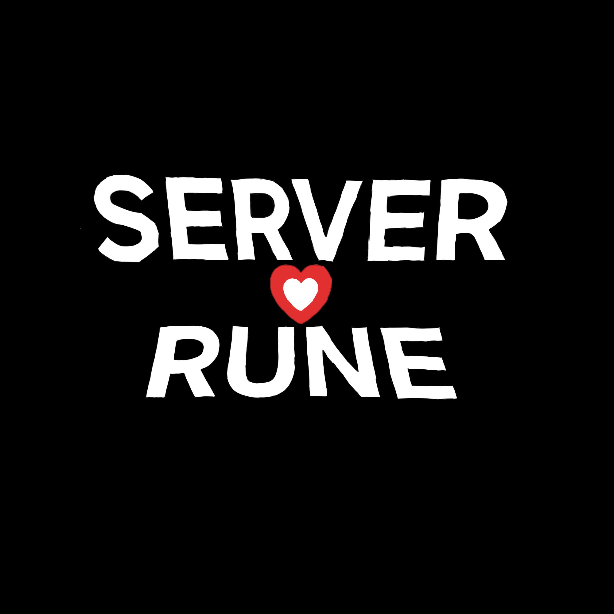
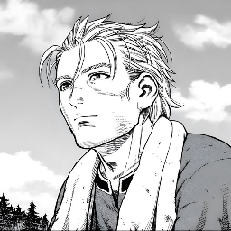
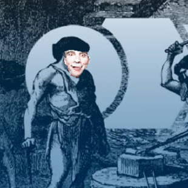
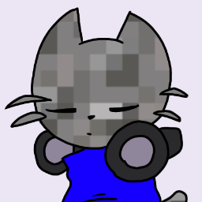
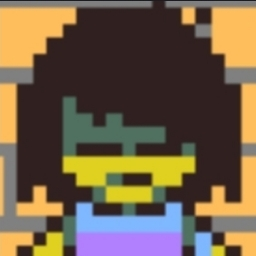
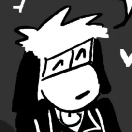
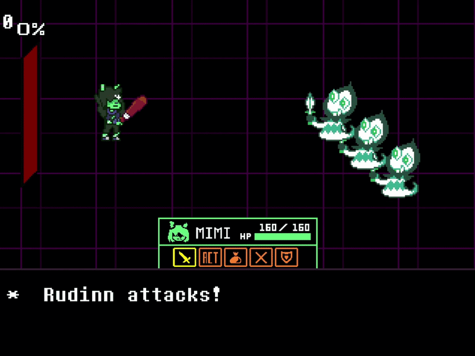
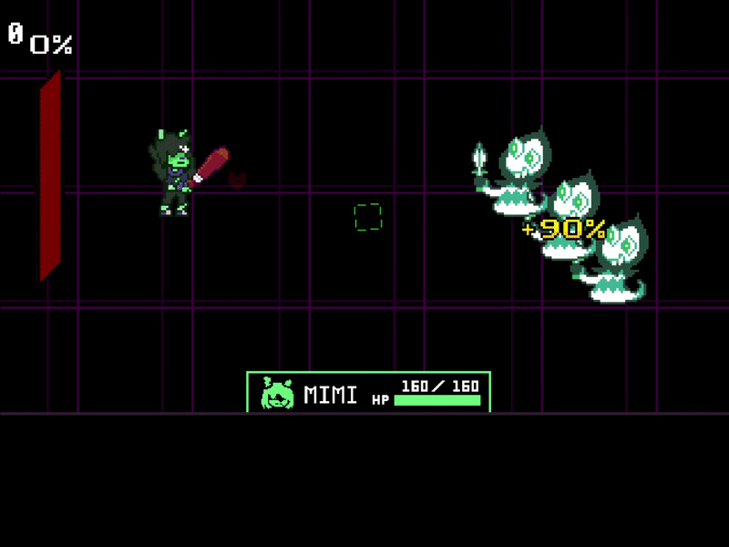

" * Server Rune é uma ideia que eu tive a um tempo com vontade de fazer uma AU, a ideia é As pessoas do server substituirem os personagens pra mostrar a AMIZADE e DETERMINAÇÃO que os Amigos podem fazer!"
- Mimi
SERVER RUNE TEAM

ROCKETZENO
Rocketzeno é o principal artista do Server Rune. Está presente desde o início do projeto e contribui com sua criatividade para dar vida ao universo da AU.

LE PROSO
Le Proso, também conhecido como Leprosue, é responsável pela programação do Server Rune e por grande parte da manutenção e desenvolvimento do projeto.

GRAVEL
Gravel é um dos compositores do Server Rune. Está no projeto desde o começo e trabalha na criação de músicas que ajudam a construir a identidade da AU.

SPR_TRICKET
TRICKET é o modder do projeto e trabalha no mod de Server Rune, um projeto separado que expande o universo da AU para além do jogo principal.

PORFILHO
Porfilho é um dos compositores do Server Rune. Entrou recentemente para a equipe e já vem contribuindo com a AU através de suas músicas e ideias.
Credits:
• The Grand G (Sweet Cap'n Cakes)
• Bah & Luk7963 (Pipis)
SERVER RUNE
Server Rune é uma AU criada a partir da ideia de transformar um servidor em um mundo próprio. As pessoas que fazem parte desse servidor passam a ocupar o lugar de personagens dentro dessa história, mas suas personalidades, relações e escolhas continuam sendo parte do que torna cada personagem único. Novos caminhos poderão ser descobertos. E nem tudo será exatamente como parece. Neste mundo, suas escolhas podem mudar o que acontece a seguir. SERVER RUNE Uma história sobre pessoas. Uma história sobre amizade. Uma história sobre determinação.


A HISTÓRIA CONTINUA...
O que acontece quando uma história começa a escapar do controle de quem a criou?